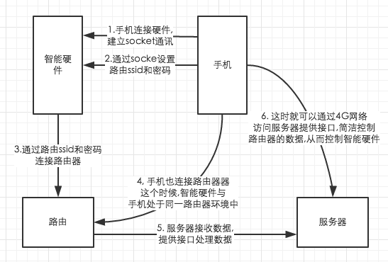
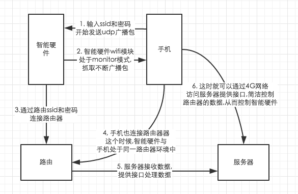

做智能家居有一段日子了,近段时间公司项目紧, 也有好些时间没有写一些技术文章
总结.趁着周末时间,整理一下自己的思路,整理一下知识点.
其实现在的所谓各种各样的智能产品, 什么智能厨房,智能破壁机,智能空调等等.
因为受到各种传感器等的技术限制,我认为这些都不是真正名义上的智能.它们并没有
什么"思想",只是单纯地将硬件接入wifi模块,连接到路由器,再通过路由器连接互联网进行信息交互.
so : 现在的智能只是令原来不能上网的各种各样的硬件,拥有了联通互联网的功能.
一、app配置智能硬件方式
- 最开始的红外线交互
- BLE交互(蓝牙低能耗技术),现在基本用的是蓝牙4.0
- nfc交互（近距离无线通讯技术）, 苹果支付你知道了吧, 将你手机放过去感应一下,滴滴滴..就付款了,就是利用了这个技术, 信息就是通过nfc交互的
- 在各式各样的硬件上植入软ap,再利用手机连接软ap配置路由的ssid和密码, 然后智能硬件就可以自行连接了路由器了,也就实现了上网的功能.硬件中的软ap连接路由器后,通过我们自己的服务器处理,手机通过4G网络也能够控制智能硬件了.

5,Smart Config , 利用了UDP协议与,智能硬件wifi模块中monitor模式, 其实和上面第四部的操作大致雷同, 不一样的地方在于,手机端填写好ssid和密码之后,不断发送udp广播包,智能硬件通过接收这些udp传输的包内数据知道ssid和密码,然后自动连接上路由器

6, 声波配置
这种方式现在应用挺广的，支付宝，等都有应用，其主要的原理就是手机放出经过编码加密的声音，智能硬件通过麦克风录音，解码解密，然后配置成功。接着就和上述基本类似
一个简单的配置可以通过很多方式，最终的目的不约而同，就是为了使用户更方便地体验产品。加上APP上的人性化设置，让用户体验十分舒服。相比而言，后面两中方式更加值得拥有，也就是所谓的一键配置功能。
我开发是基于第五点, 以我们公司来说,wifi模块是由别的厂家提供, 同时厂家也给出一份wifi模块的通讯协议供我们参考.,正如第五点所说功能连接所说,我这一边需要做的工作主要有
- 注册服务。(也就是将路由ssid与密码通过wifi模块提供的协议注册一个服务)
- 检索服务, 写一个检索服务的模块,来获取我需要的信息
- 检索到服务之后,通过苹果提供的代理方法,获取服务的基本信息(例如IP,例如Mac地址)
- 连接之后,就可以通过wifi模块提供的协议,去控制智能硬件,从而改变硬件的一些状态